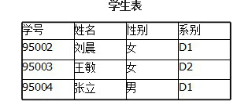

- 数据库技术产生于六十年代末，是数据管理的最新技术，是计算机科学的重要分支
- 数据库技术是信息系统的核心和基础，它的出现极大地促进了计算机应用向各行各业的渗透
- 数据库的建设规模、数据库信息量的大小和使用频度已成为衡量一个国家信息化程度的重要标志
- 数据(Data)是数据库中存储的基本对象
- 数据的定义
- 数据的种类
- 数据的特点
- 数据本身是一些可以识别的符号，并不具备实际意义。
- 数据+语义=信息
- 信息可以由不同的数据形式表现出来
- 例如：今天是星期五 和 Today is Friday
- 数据举例：
- 学生档案中的学生记录
- 数据的形式不能完全表达其内容
- 数据的解释
- 语义：学生姓名、性别、出生年月、籍贯、所在系别、入学时间
- 解释：李明是个大学生，男、1972年出生，江苏人，1990年考入计算机系
- 人们收集并抽取出一个应用所需要的大量数据之后，应将其保存起来以供进一步加工处理，进一步抽取有用信息
- 数据库的定义
- 数据库(Database,简称DB)是长期储存在计算机内、有组织的、可共享的大量数据集合
- 数据库的特征
- 数据按一定的数据模型组织、描述和储存
- 可为各种用户共享
- 冗余度较小
- 数据独立性较高
- 易扩展
- 什么是DBMS
- 数据库管理系统（Database Management System，简称DBMS）是位于用户与操作系统之间的一层数据管理软件。
- DBMS的用途

- DBMS的主要功能
- 数据定义功能:提供数据定义语言(DDL)
- 数据操纵功能:提供数据操纵语言(DML)
(查询、插入、删除和修改)如图所示
打开C表
- 数据库的运行管理
- 保证数据的安全性、完整性、多用户对数据的并发使用发生故障后的系统恢复
插入95004 ，张三，男，D2的结果
插入95005 ，张三，男，D4的结果
- 数据库的建立和维护功能(实用程序)
- 数据库数据批量装载
- 数据库转储
- 介质故障恢复
- 数据库的重组织
- 性能监视等
- 典型DBMS
- DB2 IBM的数据库产品。 无论从数据库产品还是数据库软件的设计思想，IBM都走在了最前沿。
- 1968年，IBM在自己的360计算机上研制成功了IMS V1，这是业界第一个层次型数据库管理系统，也是层次型数据库中最为著名的和最为典型的系统；
- 1970年，公司的研究员埃德加・考特发表了业界第一篇关于关系数据库理论的论文《大型共享数据库数据的关系模型》，
首次提出了关系模型的概念；这篇论文是计算机科学史上最重要的论文之一，也奠定了考特博士“关系数据库之父”的地位。
- 早期的IMS让IBM数据库拥有很大的市场占有率。而后从1970 开始，IBM 开发了完整的关系数据库管理系统DB2。
DB2功能很强大，即便后来出现的Oracle风头盖过了它，但仍被大家公认为最好的数据库产品之一。
DB2有多个安装版本，支持多操作系统，多种类型的硬件和设备。
- Oracle
- 1977年6月，拉里埃里森与几位朋友在硅谷共同创办了一家名为软件开发实验室（Software Development Laboratories，SDL）的计算机公司。
策划构建可商用的关系型数据库管理系统
- 1979年的夏季发布了可用于DEC公司的PDP-11计算机上的商用ORACLE产品
- 1998年9月，ORACLE公司正式发布ORACLE 8i
- 甲骨文公司卖单一产品oracle并使其称为世界首富第七位
- SQL Server
- 微软开始在数据库方面并不是很专业，于是在1988年邀请当时在数据库领域势头正旺的Sysbase，共同开发SqlServer。
有了Sysbase在数据库方面强大的技术支持
- 学完Sysbase数据库技术构架并成功改写后，微软于1994年中止与Sysbase的合作并在1995推出SQL Server 6.0。
- SQLServer只能安装在window平台下，安全性自然比DB2,Oracle低一个档次
- MySql
- Mysql原来被Sun收购，现在SUN被甲骨文收购，所以mysql属于甲骨文
- 非常广泛的数据库产品，虽然功能没有oarcle,db2等强大，但从安装使用数目来说，依然很多，因为其功能完善，
比如从5.0开始也支持存储过程，最主要的是免费，支持多操作系统。
- 什么是数据库系统
- 数据库系统（Database System，简称DBS）是指在计算机系统中引入数据库后的系统构成。
- 在不引起混淆的情况下常常把数据库系统简称为数据库。
- 数据库系统的构成
- 简单说就是数据库与数据库管理系统的联合。
由数据库、数据库管理系统（及其开发工具）、应用系统、数据库管理员（和用户）构成。
- 什么是数据管理
- 对数据进行分类、组织、编码、存储、检索和维护，是数据处理的中心问题
- 数据管理技术的发展过程
- 人工管理阶段
- 时期
- 产生的背景
- 应用需求 科学计算
- 硬件水平 无直接存取存储设备
- 软件水平 没有操作系统、无数据管理软件
- 处理方式 批处理
- 特点
- 数据的管理者：应用程序，数据不保存。
- 数据面向的对象：某一应用程序。
- 数据的共享程度：无共享、冗余度极大。
- 数据的独立性：不独立，完全依赖于程序。逻辑结构或者物理结构改变，修改程序。
- 数据的结构化：无结构
- 数据控制能力：应用程序自己控制。
- 文件系统阶段
- 时期
- 产生的背景
- 应用需求 科学计算、管理
- 硬件水平 直接存储设备――磁盘、磁鼓
- 软件水平 有文件系统
- 处理方式 联机实时处理、批处理
- 特点
- 数据的管理者：文件系统，数据可长期保存。
- 数据面向的对象：某一应用程序。
- 数据的共享程度：共享性差、冗余度大。
- 数据的结构化：记录内有结构,整体无结构。
- 数据的独立性：独立性差，数据的逻辑结构改变必须修改应用程序。
- 数据控制能力：应用程序自己控制。
- 数据库系统阶段
- 时期
- 产生的背景
- 应用背景 大规模管理
- 硬件背景 大容量磁盘
- 软件背景 有数据库管理系统
- 处理方式 联机实时处理,分布处理,批处理
- 特点
- 数据的管理者：DBMS。
- 数据面向的对象：整个系统。
- 数据的共享程度：共享性高。
- 数据的独立性：高度的物理独立性和一定的逻辑独立性。
- 数据的结构化：整体数据结构化。
- 数据控制能力：由DBMS统一管理和控制。
- 数据管理技术的发展动力
- 应用需求的推动
- 计算机硬件的发展
- 计算机软件的发展
- DBMS对数据的控制功能
- 数据的安全性（Security）保护
- 使每个用户只能按指定方式使用和处理指定数据，保护数据以防止不合法的使用造成的数据的泄密和破坏。
- 数据的完整性（Integrity）检查
- 将数据控制在有效的范围内，或保证数据之间满足一定的关系。
- 并发（Concurrency）控制
- 对多用户的并发操作加以控制和协调，防止相互干扰而得到错误的结果。
- 数据库恢复（Recovery）
- 在数据库中用数据模型这个工具来抽象、表示和处理现实世界中的数据和信息。通俗地讲数据模型就是现实世界的模
- 拟数据模型应满足三方面要求
- 能比较真实地模拟现实世界
- 容易为人所理解
- 便于在计算机上实现
- 数据模型分成两个不同的层次
- 概念模型 也称信息模型，它是按用户的观点来对数据和信息建模。
- 逻辑模型 主要包括网状模型、层次模型、关系模型等，它是按计算机系统的观点对数据建模，主要用于DBMS的实现。
- 客观对象的抽象过程---两步抽象
- 现实世界中的客观对象抽象为概念模型；
- 把概念模型转换为某一DBMS支持的逻辑数据模型。
1.2 数据模型
- 数据结构
- 什么是数据结构
- 两类对象
- 与数据类型、内容、性质有关的对象（域，属性、关系等）
- 与数据之间联系有关的对象
- 数据结构是对系统静态特性的描述。
- 数据操作
- 数据操作
- 对数据库中各种对象（型）的实例（值）允许执行的操作及有关的操作规则。
- 数据操作的类型
- 数据模型对操作的定义
- 操作的确切含义
- 操作符号
- 操作规则（如优先级）
- 实现操作的语言
- 数据操作是对系统动态特性的描述。
- 数据的约束条件
- 数据的约束条件
- 一组完整性规则的集合。
- 完整性规则是给定的数据模型中数据及其联系所具有的制约和储存规则，
用以限定符合数据模型的数据库状态以及状态的变化，以保证数据的正确、有效、相容。
- 数据模型对约束条件的定义
- 反映和规定本数据模型必须遵守的基本的通用的完整性约束条件。
- 例如在关系模型中，任何关系必须满足实体完整性和参照完整性两个条件。
提供定义完整性约束条件的机制，以反映具体应用所涉及的数据必须遵守的特定的语义约束条件。
- 概念模型
- 概念模型的用途
- 概念模型用于信息世界的建模
- 是现实世界到机器世界的一个中间层次
- 是数据库设计的有力工具
- 数据库设计人员和用户之间进行交流的语言
- 对概念模型的基本要求
- 较强的语义表达能力，能够方便、直接地表达应用中的各种语义知识
- 简单、清晰、易于用户理解
- 信息世界中的基本概念
- 实体（Entity）
- 客观存在并可相互区别的事物称为实体。可以是具体的人、事、物或抽象的概念。
- 属性（Attribute）
- 实体所具有的某一特性称为属性。
- 一个实体可以由若干个属性来刻画。
- 码（Key）
- 域（Domain）
- 实体型（Entity Type）
- 用实体名及其属性名集合来抽象和刻画同类实体属于一个实体型
- 实体集（Entity Set）
- 联系（Relationship）
- 现实世界中事物内部以及事物之间的联系在信息世界中反映为实体内部的联系和实体之间的联系
- 实体型间联系
- 两个实体型 一对一联系（1:1）
- 三个实体型 一对多联系（1:n）
- 一个实体型 多对多联系（m:n）
- 两个实体型间的联系
- 一对一联系
- 如果对于实体集A中的每一个实体，实体集B中至多有一个实体与之联系，反之亦然，则称实体集A与实体集B具有一对一联系。记为1:1。
- 实例
- 一对多联系
- 如果对于实体集A中的每一个实体，实体集B中有n个实体（n≥0）与之联系，反之，对于实体集B中的每一个实体，
实体集A中至多只有一个实体与之联系，则称实体集A与实体集B有一对多联系记为1:n。
- 实例
- 班级与学生之间的联系：
- 一个班级中有若干名学生,每个学生只在一个班级中学习
- 多对多联系（m:n）
- 如果对于实体集A中的每一个实体，实体集B中有n个实体（n≥0）与之联系，反之，对于实体集B中的每一个实体，
实体集A中也有m个实体（m≥0）与之联系，则称实体集A与实体B具有多对多联系。记为m:n。
- 实例
- 课程与学生之间的联系：
- 一门课程同时有若干个学生选修,一个学生可以同时选修多门课程
联系的表示方法示例
- 多个实体型间的联系
- 多个实体型间的一对多联系
- 若实体集E1，E2，...，En存在联系，对于实体集Ej（j=1，2，...，i-1，i+1，...，n）中的给定实体，最多只和Ei中的一个实体相联系，
则我们说Ei与E1，E2，...，Ei-1，Ei+1，...，En之间的联系是一对多的。
- 实例
- 课程、教师与参考书三个实体型
- 如果一门课程可以有若干个教师讲授，使用若干本参考书，每一个教师只讲授一门课程，每一本参考书只供一门课程使用
- 多个实体型间的一对一联系
- 多个实体型间的多对多联系
概念模型的表示方法
- 概念模型的表示方法很多
- 实体－联系方法(E-R方法)
- 用E-R图来描述信息世界的概念模型
- E-R方法也称为E-R模型
E-R图
- 属性
- 用椭圆形表示属性，并用无向边将其与相应的实体连接起来。
- 联系
- 联系本身：用菱形表示，菱形框内写明联系名，并用无向边分别与有关实体连接起来，同时在无向边旁标上联系的类型（1:1、1:n或m:n）
- 联系的属性：联系本身也是一种实体型，也可以有属性。如果一个联系具有属性，则这些属性也要用无向边与该联系连接起来。
联系的表示方法
联系属性的表示方法

- 非关系模型
- 层次模型（Hierarchical Model）
- 网状模型(Network Model )
- 数据结构：以基本层次联系为基本单位
- 基本层次联系：两个记录以及它们之间的一对多（包括一对一)的联系
- 关系模型(Relational Model)
- 面向对象模型(Object Oriented Model
应用程序与数据的对应关系(人工管理)
应用程序与数据的对应关系(文件系统)
应用程序自己设计、说明和管理数据。
逻辑结构、物理结构、存储结构、存取方法等等
文件系统中数据的结构
- 记录内有结构。
- 数据的结构是靠程序定义和解释的。
- 数据只能是定长的。
- 可以间接实现数据变长要求，但访问相应数据的应用程序复杂了。
- 文件间是独立的，因此数据整体无结构。
- 可以间接实现数据整体的有结构，但必须在应用程序中对描述数据间的联系。
- 数据的最小存取单位是记录。
数据的高共享性的好处
- 降低数据的冗余度，节省存储空间
- 避免数据间的不一致性（数据的不一致是指同一数据不同拷贝的值）
- 使系统易于扩充
- Student(sno,sname,ssex,sage,sdept)
- 程序1(sno,sname, sdept)
- 程序2(sno,sname,sage)
- 程序3(sno,sname,ssex,sage,sdept)
数据独立性
- 物理独立性
- 指用户的应用程序与存储在磁盘上的数据库中数据是相互独立的。当数据的物理存储改变了，应用程序不用改变。
- 逻辑独立性
- 指用户的应用程序与数据库的逻辑结构是相互独立的。数据的逻辑结构改变了，用户程序也可以不变。
数据结构化
- 整体数据的结构化是数据库的主要特征之一。数据面向整个系统。数据之间是有联系的。
- 整体数据的结构化是数据库系统与文件系统的本质区别。
- 数据库中实现的是数据的真正结构化
- 数据的结构用数据模型描述，无需程序定义和解释。
- 数据可以变长。
- 数据的最小存取单位是数据项。
最常用的数据模型
- 在用户观点下，关系模型中数据的逻辑结构是一张二维表，它由行和列组成。
- 在关系模型中，实体以及实体间的联系都是用关系来表示。
- 注：
- 在层次、网状模型中，数据之间的联系是通过指针实现的
- 在关系模型中，数据之间的联系是通过主码和外码实现的。
- 实体及实体间的联系的表示方法
- 实体型：直接用关系（表）表示。
- 属性：用属性名表示。
- 一对一联系：隐含在实体对应的关系中。
- 一对多联系：隐含在实体对应的关系中。
- 多对多联系：直接用关系表示。
- 查询、插入、删除、更新
- 数据操作是集合操作，操作对象和操作结果都是关系，即若干元组的集合
- 存取路径对用户隐蔽，用户只要指出“干什么”，不必详细说明“怎么干”
- 表以文件形式存储
- 有的DBMS一个表对应一个操作系统文件
- 有的DBMS自己设计文件结构
优点
- 建立在严格的数学概念的基础上
- 概念单一。数据结构简单、清晰，用户易懂易用
- 实体和各类联系都用关系来表示。
- 对数据的检索结果也是关系。
- 关系模型的存取路径对用户透明
- 具有更高的数据独立性，更好的安全保密性。
- 简化了程序员的工作和数据库开发建立的工作。
缺点
- 存取路径对用户透明导致查询效率往往不如非关系数据模型
- 为提高性能，必须对用户的查询请求进行优化增加了开发数据库管理系统的难度
- 从数据库管理系统角度看，数据库系统通常采用三级模式结构：这是数据库系统内部的模式结构
- 从数据库最终用户角度看，数据库系统的结构分为集中式结构、分布式结构、客户/服务器结构和并行结构。这是数据库系统外部的体系结构
- 数据模型中有“型” 和“值” 的概念
- 模式（Schema）
- 数据库中全体数据的逻辑结构和特征的描述
- 是型的描述
- 反映的是数据的结构及其联系
- 模式是相对稳定的
- 模式的一个实例（Instance）
- 模式的一个具体值
- 反映数据库某一时刻的状态
- 同一个模式可以有很多实例
- 实例随数据库中的数据的更新而变动
- 模式（Schema）
- 模式（也称逻辑模式）
- 数据库中全体数据的逻辑结构和特征的描述
- 所有用户的公共数据视图，综合了所有用户的需求
- 一个数据库只有一个模式
- 模式的地位：是数据库系统模式结构的中间层
- 与数据的物理存储细节和硬件环境无关
- 与具体的应用程序、开发工具及高级程序设计语言无关
- 模式的定义
- 数据的逻辑结构（数据项的名字、类型、取值范围等）
- 数据之间的联系
- 数据有关的安全性、完整性要求
- DBMS提供DDL严格定义模式
- 外模式（External Schema）
- 外模式（也称子模式或用户模式）
- 数据库用户（包括应用程序员和最终用户）使用的局部数据的逻辑结构和特征的描述
- 数据库用户的数据视图，是与某一应用有关的数据的逻辑表示
- 外模式的地位：介于模式与应用之间
- 模式与外模式的关系：一对多
- 外模式通常是模式的子集
- 一个数据库可以有多个外模式。反映了不同的用户的应用需求、看待数据的方式、对数据保密的要求
- 对模式中同一数据，在外模式中的结构、类型、长度、保密级别等都可以不同
- 外模式与应用的关系：一对多
- 同一外模式也可以为某一用户的多个应用系统所使用
- 但一个应用程序只能使用一个外模式
- 外模式的用途
- 保证数据库安全性的一个有力措施。
- 每个用户只能看见和访问所对应的外模式中的数据
- 内模式（Internal Schema）
- 内模式（也称存储模式）
- 是数据物理结构和存储方式的描述。
- 是数据在数据库内部的表示方式。
- 记录的存储方式（顺序存储，按照B树结构存储，按hash方法存储）
- 索引的组织方式
- 数据是否压缩存储
- 数据是否加密
- 数据存储记录结构的规定
- 一个数据库只有一个内模式
- 三级模式是对数据的三个抽象级别
- 因为三级结构之间有差异，因此需要二级映象在DBMS内部实现这三个抽象层次的联系和转换
- 外模式／模式映象
- 定义外模式与模式之间的对应关系
- 每一个外模式都对应一个外模式／模式映象
- 映象定义通常包含在各自外模式的描述中
- 外模式／模式映象的用途
- 保证数据的逻辑独立性
- 当模式改变时，数据库管理员修改有关的外模式／模式映象，使外模式保持不变
- 应用程序是依据数据的外模式编写的，从而应用程序不必修改，保证了数据与程序的逻辑独立性，简称数据的逻辑独立性。
- 模式／内模式映象
- 模式／内模式映象定义了数据全局逻辑结构与存储结构之间的对应关系。例如，说明逻辑记录和字段在内部是如何表示的
- 数据库中模式／内模式映象是唯一的
- 该映象定义通常包含在模式描述中
- 模式／内模式映象的用途
- 保证数据的物理独立性
- 当数据库的存储结构改变了（例如选用了另一种存储结构），数据库管理员修改模式／内模式映象，使模式保持不变
- 应用程序不受影响。保证了数据与程序的物理独立性，简称数据的物理独立性。
模式
- 是数据库的中心与关键
- 独立于数据库的其它层次
- 设计数据库模式结构时应首先确定数据库的逻辑模式
内模式
- 依赖于全局逻辑结构，但独立于数据库的用户视图即外模式，也独立于具体的存储设备。
- 它将全局逻辑结构中所定义的数据结构及其联系按照一定的物理存储策略进行组织，以达到较好的时间与空间效率。
外模式
- 面向具体的应用程序，定义在逻辑模式之上，但独立于存储模式和存储设备。
- 设计外模式时应充分考虑到应用的扩充性。当应用需求发生较大变化，相应外模式不能满足其视图要求时，该外模式就得做相应改动。
应用程序
- 在外模式描述的数据结构上编制的，它依赖于特定的外模式，与数据库的模式和存储结构独立。
- 不同的应用程序有时可以共用同一个外模式。
二级映象
- 保证了数据库外模式的稳定性，从而从底层保证了应用程序的稳定性，除非应用需求本身发生变化，否则应用程序一般不需要修改。
- 数据与程序之间的独立性，使得数据的定义和描述可以从应用程序中分离出去。
数据库系统对硬件资源的要求
- 足够大的内存
- 操作系统
- DBMS的核心模块
- 数据缓冲区
- 应用程序
- 足够大的外存
- 较高的通道能力，提高数据传送率
- DBMS
- 操作系统
- 与数据库接口的高级语言及其编译系统
- 以DBMS为核心的应用开发工具
- 为特定应用环境开发的数据库应用系统
数据库管理员
- 决定数据库中的信息内容和结构
- 决定数据库的存储结构和存取策略
- 定义数据的安全性要求和完整性约束条件
- 监控数据库的使用和运行
系统分析员
- 负责应用系统的需求分析和规范说明
- 与用户及DBA协商，确定系统的硬软件配置
- 参与数据库系统的概要设计
数据库设计人员
- 参加用户需求调查和系统分析
- 确定数据库中的数据
- 设计数据库各级模式
应用程序员
- 设计和编写应用系统的程序模块
- 进行调试和安装
- 偶然用户
- 简单用户
- 复杂用户
- 工程师、科学家、经济学家、科技工作者等
- 直接使用数据库语言访问数据库，甚至能够基于数据库管理系统的API编制自己的应用程序
数据库系统概述
- 数据库的基本概念
- 数据管理的发展过程
- 数据库系统的研究领域
数据模型
- 数据模型的三要素
- 概念模型， E-R 模型
- 三种主要数据模型
数据库系统的结构
数据库系统的组成